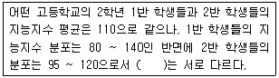
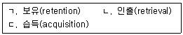
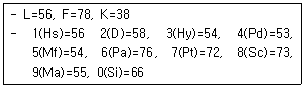
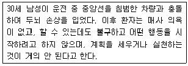
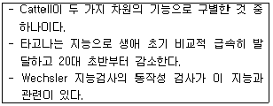
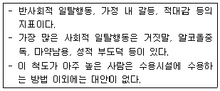
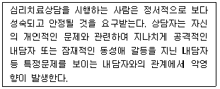
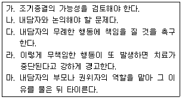

임상심리사-2급 (2014-08-17 기출문제)
1과목: 심리학개론
1. 다음 ( )에 알맞은 것은?

- 중앙치
- 최빈치
- 변산도
- 통계치
(정답률: 76%)

2. 장기기억에 관한 설명과 가장 거리가 먼 것은?
- 주로 의미로 부호화되어 사용된다.
- 한 기억요소는 색인 또는 연합이 적을수록 간섭도 적어지므로 쉽게 기억된다.
- 일반적으로 일화기억보다 의미기억의 정보가 망각이 적게 일어난다.
- 망각은 유사한 정보 간의 간섭에 기인한 인출단서의 부족에 의해 생긴다.
(정답률: 71%)
3. Kohlberg의 도덕발달이론에 관한 설명과 가장 거리가 먼 것은?
- 도덕발달단계들은 보편적이며 불변적인 순서로 진행된다.
- 문화권에 따른 차이와 성차 그리고 사회계층의 차이를 충분히 고려하지 않았다는 비판을 받고 있다.
- 도덕적 인식이 전혀 없는 단계, 외적준거와 행위의 결과에 의해 판단하는 단계, 행위의 결과와 의도를 함께 고려하는 단계 순으로 나아간다.
- 벌과 복종지향, 개인적 보상 지향, 대인관계 조화지향, 법과 질서 지향, 사회계약 지향, 보편적 도덕원리 지향의 단계 순으로 나아간다.
(정답률: 38%)
4. 학습을 외현적 행동의 변화라기보다는 오히려 지식의 습득이라는 측면에서 학습과 수행을 개념적으로 분리시켜 잠재학습(latent learning)을 설명한 학자는?
- Thorndike
- Tolman
- Kohler
- Bandura
(정답률: 50%)
5. 집단에서의 상대적 위치를 알려주는데 유용한 점수는?
- 백분율점수
- 원점수
- 평균점수
- 백분위점수
(정답률: 68%)
6. 노년기 발달에 관한 설명과 가장 거리가 먼 것은?
- 우울증 경향이 증가한다.
- 내향성 경향이 높아진다.
- 경직성 경향이 강해진다.
- 기존의 성역할이 강화된다.
(정답률: 76%)
7. 성격이론가에 관한 설명으로 틀린 것은?
- Allport는 성격은 과거 경험에 의해 학습된 행동성향으로, 상황이 달라지면 행동성향도 변화 한다고 보았다.
- Cattell은 특질을 표면특질과 근원특질로 구분하고, 자료의 통계분석에 근거하여 16개의 근원 특질을 제시하였다.
- Rogers는 현실에 대한 주관적 해석 및 인간의 자기실현과 성장을 위한 욕구를 강조하였다.
- Freud는 본능적인 측면을 강조하고 사회환경적 요인을 상대적으로 경시하였다.
(정답률: 64%)
8. 실험법과 조사법의 가장 근본적인 차이점은?
- 실험실 안에서 연구를 수행하는지의 여부
- 연구자가 변인을 통제하는지의 여부
- 연구변인들의 수가 많은지의 여부
- 연구자나 연구참가자의 편파가 존재하는지의 여부
(정답률: 79%)
9. 망각의 원인에 관한 설명과 가장 거리가 먼 것은?
- 분명히 읽었던 정보를 기억할 수 없는 원인은 비효율적인 부호화 때문이라고 할 수 있다.
- 소멸이론에서 망각은 정보 간의 간섭 때문이라고 주장한다.
- 새로운 학습이 이전의 학습을 간섭하기 때문에 망각이 일어나는 것을 역행성 간섭이라고 한다.
- 망각을 인출실패로 간주하는 주장도 있다.
(정답률: 58%)
10. Kelley의 공변모형에서 사람들이 내부 혹은 외부귀인을 할 때 고려하는 정보가 아닌 것은?
- 일관성(consistency)
- 특이성(distinctiveness)
- 현저성(salience)
- 동의성(consensus)
(정답률: 56%)
11. 학습속도는 느리지만, 가장 높은 반응률을 보이는(소거가 가장 어려운) 강화계획은?
- 고정비율 강화계획
- 변동비율 강화계획
- 고정간격 강화계획
- 변동간격 강화계획
(정답률: 68%)
12. 당신은 비행기 여행에 대해 상당한 두려움을 가지고 있는 환자를 면담하게 되었다. 당신이 정신분석적 입장을 취하는 사람이라면 이 환자가 가지는 두려움의 원인을 어디에서 찾겠는가?
- 두려운 느낌을 갖게 만드는 무의식적 갈등의 전이
- 어린 시절 사랑하는 부모에게 닥친 비행기 사고의 경험
- 비행기의 추락 등 비행기 관련 요소들의 통제 불가능성
- 자율신경계 등 생리적 활동의 이상
(정답률: 71%)
13. 실험법에 관한 설명과 가장 거리가 먼 것은?
- 실험법은 심리학이 과학적인 학문으로 발전하는 데 큰 기여를 했다.
- 실험법에서 다른 조건들을 일정하게 고정시키는 것을 통제라고 한다.
- 독립변인이 어떻게 결과에 영향을 미치는지를 알아보기 위한 조작을 처치라고 한다.
- 실험법에서는 가외변인을 통제하기 어렵다는 단점이 있다.
(정답률: 69%)
14. Freud의 방어기제 중 성적인 충동이나 공격성을 사회적으로 용인된 바람직한 방향으로 변화 시켜 표현하는 기제는?
- 합리화
- 주지화
- 승화
- 전위
(정답률: 76%)
15. 행동주의적 성격이론에 관한 설명과 가장 거리가 먼 것은?
- 학습원리를 통해서 성격을 설명하였다.
- 상황적인 변인보다 유전적인 변인을 중시하였다.
- Skinner는 어떤 상황에서 비롯되는 행동과 그 결과를 강조하였다.
- 모든 행동을 자극과 반응이라는 기본단위로 설명하였다.
(정답률: 81%)
16. 상관계수에 관한 설명으로 가장 적합한 것은?
- 변인들 간의 인과성을 알 수 있다.
- 정적상관은 하나의 변인이 증가하면 다른 하나의 변인은 감소한다.
- 상관관계는 산포도의 모양에서 개략적인 추정이 가능하다.
- 상관계수 r=1 일 때 산포도 상의 모든 점들이 수평선에 위치한다.
(정답률: 46%)
17. 성격이론과 대표적인 연구자가 잘못 짝지어진 것은?
- 정신분석이론 - 프로이드 (freud)
- 행동주의이론 - 로저스 (rogers)
- 인본주의이론 - 매슬로우 (maslow)
- 특질이론 - 올포트 (Allport)
(정답률: 74%)
18. 인지부조화가 발생하는 조건이 아닌 것은?
- 취소 불가능한 개입
- 자발적 선택
- 불충분한 유인가
- 욕구좌절
(정답률: 56%)
19. 기억 단계를 바르게 나열한 것은?

- ㄱ → ㄴ → ㄷ
- ㄷ → ㄱ → ㄴ
- ㄴ → ㄱ → ㄷ
- ㄱ → ㄷ → ㄴ
(정답률: 88%)
20. 유발된 행동과 보상이 우연히 동시에 발생하여 학습되는 행동은?
- 일반화
- 미신행동
- 조작행동
- 변별
(정답률: 85%)
2과목: 이상심리학
21. 불안장애를 치료하는데 효과적인 벤조다이아제핀의 생물학적 기제는?
- 신경전달물질인 GABA의 활동을 차단한다.
- GABA의 방출을 증가시킨다.
- 신경전달물질인 세로토닌의 활동을 차단한다.
- 세로토닌의 방출을 촉진한다.
(정답률: 39%)
22. 우울증과 관련하여 Beck이 제시한 부정적 3요소로 가장 적합한 것은?
- 자신, 상황 및 미래에 대한 비관적 견해
- 자신, 과거 및 환경에 대한 비관적 견해
- 자신, 과거 및 미래에 대한 비관적 견해
- 자신, 미래 및 관계에 대한 비관적 견해
(정답률: 71%)
23. 알코올 남용에 대한 설명과 가장 거리가 먼 것은?
- 반복적인 알코올 사용으로 인해 직장, 학교, 가정에서의 중요한 임무를 수행하지 못한다.
- 신체적으로 해를 주는 상황에서 반복적으로 알코올을 사용한다.
- 반복적인 알코올 사용과 관련된 법적인 문제를 일으킨다.
- 알코올 사용을 경감하거나 사용하지 않을 때 금단증상이 나타난다.
(정답률: 37%)
24. 기분장애의 원인론에 관한 설명으로 틀린 것은?
- 생리학적으로는 세로토닌 수준이 높아지면 우울증에 걸리게 된다고 설명하고 있다.
- Freud의 정신분석이론에서는 구강기 동안 욕구가 충족되지 못했거나 과잉 충족되면 우울증에 걸릴 수 있다고 설명하고 있다.
- Beck의 인지이론에서는 사고과정으로 우울증을 설명하고 있다.
- 자신의 삶을 통제할 수 없다는 느낌과 개인의 수동적 태도가 학습되어 무기력감을 가지게 된 결과가 우울증을 유발한다는 주장이 있다.
(정답률: 63%)
25. 정신분열병의 양성증상에 해당하는 것은?
- 환각
- 무욕증
- 둔마된 정동
- 빈곤한 언어
(정답률: 78%)
26. 대체로 불안이 높고 자기 신뢰가 부족하며 사람과의 관계에서 두려움을 갖는 행동을 특징적으로 나타내는 C군 성격장애에 해당되지 않는 것은?
- 편집성 성격장애
- 의존성 성격장애
- 강박성 성격장애
- 회피성 성격장애
(정답률: 59%)
27. DSM-5에 따르면, 성기능장애에 해당되지 않는 것은?
- 조루증
- 성정체감 장애
- 남성 성욕감퇴장애
- 남성 발기 장애
(정답률: 63%)
28. DSM-5에 따르면, 수정 탈출이 어렵거나 곤란한 장소 또는 공황발작과 같이 갑작스런 곤경에 빠질 경우 도움을 받을 수 없는 장소나 상황에 대한 공포를 나타내는 불안장애는?
- 왜소공포증
- 사회공포증
- 폐쇄공포증
- 광장공포증
(정답률: 61%)
29. 노인성 치매환자에 관한 설명으로 가장 적합한 것은?
- 일시적인 지능 결함을 보인다.
- 초기와 중기에는 서서히 진행되나, 말기에는 빨라진다.
- 늘 다니던 화장실에 갔다가 자신의 방을 찾아올 수 없는 행동을 보인다.
- 질문은 한번만 하고, 다시 하려하지 않는다.
(정답률: 67%)
30. DSM-4에서 광범위성 발달장애에 포함되지 않는 것은?
- 반응성 애착장애
- 자폐성 장애
- 아스퍼거 장애
- 소아기 붕괴성 장애
(정답률: 65%)
31. 이상행동의 설명모형 중 통합적 입장에 해당하는 것은?
- 대상관계이론
- 사회적 학습이론
- 취약성-스트레스 모델
- 세로토닌-도파민 가설
(정답률: 64%)
32. 주의력결핍 및 과잉행동장애(ADHD)에 관한 설명으로 틀린것은?
- 주된 어려움 중 한 가지는 충동 통제의 결함이다.
- 타인의 행동을 적대적으로 해석하는 특성을 가지고 있다.
- 신호자극에 대해 각성하는데 문제가 생겨 이 장애가 발생할 수도 있다.
- 청소년 후기보다 전기, 그리고 소녀보다 소년에게서 더 흔하게 나타난다.
(정답률: 63%)
33. 성격장애와 연관된 방어기제를 바르게 짝지은 것은?
- 강박성 성격장애 - 합리화(rationalization)
- 분열성 성격장애 - 행동화(acting-out)
- 반사회성 성격장애 - 이지화(intellectualization)
- 편집성 성격장애 - 투사(projection)
(정답률: 60%)
34. DSM-4에서 충동조절장애에 관한 설명으로 적합하지 않은 것은?
- 병적 도박증, 도벽증, 방화증, 발모증 등의 하위유형이 있다.
- 자기 자신이나 타인에게 해를 끼칠 수 있는 행동을 하려는 충동, 욕구, 유혹에 저항하지 못한다.
- 충동적 행동을 하기 전까지 긴장감이나 각성상태가 고조된다.
- 충동적인 행동을 할 때마다 불쾌감이나 불안감 또는 죄책감을 경험하게 된다.
(정답률: 71%)
35. DSM-4에서 해리성 정체감 장애의 진단기준과 가장 거리가 먼 것은?
- 한 사람 안에 둘 또는 그 이상의 각기 뚜렷이 구별되는 정체감이나 성격상태가 존재한다.
- 적어도 둘 이상의 정체감이나 인격 상태가 반복적으로 개인의 행동을 통제한다.
- 일상적인 망각으로 설명하기에는 너무 광범위하고 중요한 개인적 정보를 회상하지 못한다.
- 알코올이나 간질 등의 직접적인 생리적 효과로 일어나는 경우도 포함된다.
(정답률: 66%)
36. DSM-4에 따르면, 정신분열증의 하위유형에 해당하지 않는 것은?
- 잔류형
- 중복형
- 긴장형
- 망상형
(정답률: 53%)
37. 우울증의 원인이 되는 우울 유발적 귀인(depressogenic attribution)현상에 대한 설명으로 옳은 것은?
- 성공원인을 외부적, 안정적, 특수적 요인에 귀인한다.
- 성공원인을 내부적, 안정적, 특수적 요인에 귀인한다.
- 실패원인을 외부적, 안정적, 특수적 요인에 귀인한다.
- 실패원인을 내부적, 안정적, 전반적 요인에 귀인한다.
(정답률: 74%)
38. 양극성 장애와 주요 우울장애의 비교설명으로 옳은 것은?
- 주요 우울장애와 양극성 장애의 발병률은 비슷하다.
- 주요 우울장애는 여자가 남자보다, 양극성 장애는 남자가 여자보다 높은 발병률을 보인다.
- 주요 우울장애는 사회경제적으로 낮은 계층에서 발생비율이 높고, 양극성 장애는 높은 계층에서 더 많이 발견된다.
- 주요 우울장애 환자는 성격적으로 자아가 약하고 의존적이며, 강박적인 사고를 보이는 경우가 많은데 비해, 양극성 장애의 경우에는 병전 성격이 히스테리성 성격장애의 특징을 보인다.
(정답률: 61%)
39. 이상행동 모델에 관한 설명으로 옳은 것은?
- 인지 모델 - 이상행동은 잘못된 사고 과정의 결과로서 잘 이해된다.
- 행동주의 모델 - 이상행동은 자기실현을 하는데 있어서 오는 어려움에서 생긴다.
- 인본주의 모델 - 이상행동은 무의식적 내적 갈등의 상징적 표현이다.
- 사회문화 모델 - 이상행동은 정상행동과 같이 학습의 결과로 습득되며 학습원리로 치료할 수 있다.
(정답률: 65%)
40. 섭식장애에 관한 설명으로 틀린 것은?
- 신체기능의 저하를 가져와 죽음에까지 이를 수 있다.
- 마른 외형을 선호하는 사회문화적 분위기와 관련된다.
- 대개 20대 중반에 처음 발병된다.
- 외모가 중시되는 직업군에서 발병률이 높다.
(정답률: 78%)
3과목: 심리검사
41. 지능에 관한 설명과 가장 거리가 먼 것은?
- 부모의 양육태도가 지능에 영향을 미칠 수 있다.
- 일반적 지능에는 유의한 성차가 없다.
- 지능과 창의성간의 상관관계는 낮은 편이다.
- 학업성취도는 언어성 검사보다 비언어성 검사와 상관관계가 더 높은 편이다.
(정답률: 57%)
42. 신경심리검사의 flexible battery approach에 관한 설명으로 틀린 것은?
- 지능검사로서는 성인용 웩슬러 지능검사가 많이 사용되기는 하지만 병전(premobid) IQ수준을 추정하기 어렵다.
- 실어증과 같은 언어능력의 손상은 크게 수용기술과 표현기술로 나누어 측정한다.
- 시ㆍ공간적 지각능력의 손상은 구성실행증(constructional apraxia)을 초래할 수 있다.
- 운동기능의 측정은 주로 운동속도, 미세운동협응(finemotor coordination), 악력강도(grip strength)로 나누어 볼 수 있다.
(정답률: 68%)
43. 지능검사를 해석하는 일반적 원칙으로 옳은 것은?
- 지능검사에서 발견한 피검자의 행동특징과 반응내용은 결과해석에 중요치 않다.
- 지능검사는 개인이 현재까지 학습해 온 것을 측정하기 보다는 개인의 능력 자체를 측정하는 것이라고 보는 것이 타당하다.
- 한 피검자의 프로파일 양상을 해석할 때 각 피검자 고유의 과거력, 행동특징, 현재의 상황들까지 고려할 필요는 없다.
- 지능검사는 과학적인 검증을 거쳐 개발되기는 하였지만 어디까지나 인위적으로 표집하여 구성된 문항의 집합일 뿐, 결과의 일반화에는 신중을 기하여야 한다.
(정답률: 69%)
44. Bayley 발달척도(BSID-Ⅱ)를 구성하는 하위척도가 아닌것은?
- 정신척도 (mental scale)
- 사회성척도 (social scale)
- 행동평정척도 (behavior rating scale)
- 운동척도 (motor scale)
(정답률: 46%)
45. 검사해석 시 자주 사용하는 T점수는 z점수와 밀접한 관련이 있다. T점수가 60이라면 이에 해당하는 z점수는?
- 0
- 1
- 2
- -1
(정답률: 71%)
46. 일반적으로 정신장애의 진단을 목적으로 하는 심리검사는?
- CPI
- MMPI
- MBTI
- 16PF
(정답률: 80%)
47. 다음 MMPI 프로파일과 가장 관련이 있는 진단은?

- 품행장애
- 우울증
- 정신분열증
- 신체화장애
(정답률: 77%)
48. 다음 환자는 뇌의 어떤 부위가 손상되었을 가능성이 높은가?

- 측두엽
- 후두엽
- 전두엽
- 소뇌
(정답률: 79%)
49. 다음 중 개인용 지능검사를 통해 수집할 수 있는 정보와 가장 거리가 먼 것은?
- 전반적 지적능력
- 소근육 운동능력
- 창의적 예술능력
- 학습된 교육수준
(정답률: 69%)
50. 다음에서 설명하고 있는 지능 개념은?

- 결정적 지능
- 다중 지능
- 유동적 지능
- 일반 지능
(정답률: 54%)
51. 다면적 인성검사(MMPI)를 제작할 때 정상인 집단과 정신장애인 집단을 설정하고, 이 두 집단을 구별해 줄 수 있는 문장들을 선정하여 문항을 제작하는 방식은?
- 내용방법(content method), 즉 논리적 합리적 방법
- 요인분석방법(factor analysis method)
- 구인(구성)타당도 접근법(construct validity approach)
- 경험적 준거 접근법(enpirical criterion-keying approach)
(정답률: 39%)
52. MMPI에서는 검사의 신뢰성과 타당성을 높여주기 위한 통계적 조작으로 몇몇 척도에 대해 K원점수 비율을 더해주는데, 다음 중 K 교정 점수를 더해주는 척도는 무엇인가?
- L 척도
- D 척도
- Si 척도
- Pt 척도
(정답률: 46%)
53. BGT 검사에 대한 설명으로 틀린 것은?
- 두뇌의 기질적인 손상 유무를 밝히기 위한 목적에만 사용이 가능하다.
- 정신 지체가 있는 피검자에게 사용할 수 있다.
- 문화적 요인이나 교육적 배경에 별로 영향을 받지 않는다.
- 언어표현 능력이 없는 피검자에게 유용하다.
(정답률: 58%)
54. K-WAIS-4 검사 시행에 관한 설명으로 옳은 것은?
- 언어성 검사를 먼저 실시한 후 동작성 검사를 시행한다.
- 집단적으로 시행하는 것을 원칙으로 하지만 경우에 따라 개별적으로 시행한다.
- K-WAIS-4는 단순히 평가뿐 아니라 교육적 성격을 가지기 때문에 검사에 대해 정답을 피드백해주는 것이 일반적이다.
- 검사 수행시의 세밀한 행동관찰도 검사결과를 해석하는데 중요한 자료가 된다.
(정답률: 63%)
55. 문항 난이도에 관한 설명으로 옳은 것은?
- 난이도가 높을수록 좋은 문항이다.
- 값이 높을수록 문항이 어렵다는 것을 의미한다.
- 한 문항에서 바르게 답한 사례수를 총 사례수의 백분율로 표시한다.
- 2지 선다형 문제인지. 4지 선다형 문제인지는 난이도에 영향을 주지 않는다.
(정답률: 55%)
56. 다음은 MMPI-2검사의 임상척도 중 무슨 척도에 해당되는가?

- Hs
- D
- Hy
- Pd
(정답률: 73%)
57. 아동용 심리검사 중 그 실시 목적이 나머지 셋과 다른것은?
- 아동용 주제통각검사(CAT)
- 주의력 장애 진단 시스템(ADS)
- 집-나무-사람 그림 검사(HTP)
- 운동성 가족화 검사(KFD)
(정답률: 68%)
58. 검사자가 지켜야 할 윤리적 의무로 틀린 것은?
- 검사과정에서 피검자에게 얻은 정보에 대해 비밀을 보장할 의무가 있다.
- 자신이 다루기 곤란한 어려움이 있을 때는 적절한 전문가에게 의뢰하여야 한다.
- 자신이 받은 학문적인 훈련이나 지도받은 경험의 범위를 벗어난 평가를 해서는 안 된다.
- 피건자가 자해행위를 할 위험성이 있어도 비밀보장의 의무를 지켜야 하므로 누구에게도 알려서는 안 된다.
(정답률: 81%)
59. MBTI(Myers-Briggs Type Indicator)의 하위척도가 아닌 것은?
- 감각-직관
- 외향성-내향성
- 판단-인식
- 개방-폐쇄
(정답률: 74%)
60. 신경심리검사를 유용하게 사용할 수 있는 환자 집단이 아닌 것은?
- 신경증 환자
- 뇌손상 환자
- 간질 환자
- 중추 신경계 손상 환자
(정답률: 39%)
4과목: 임상심리학
61. 심리사회적 또는 환경적 스트레스와 조합된 생물학적 또는 기타 취약성이 질병을 일으킨다는 것은?
- 상호적 유전-환경 조망
- 병적 소질-스트레스 조망
- 사회적 조망
- 생물학적 조망
(정답률: 65%)
62. 실존적 접근의 심리치료는?
- 인지치료
- 의미치료
- 자기교습훈련
- 합리적 정서행동치료
(정답률: 55%)
63. Wolpe의 체계적 둔감법 절차에 관한 설명으로 틀린 것은?
- 공포증의 치료에 효과적인 것으로 밝혀졌다.
- 불안을 억제하기 위하여 이완 상태를 유도한다.
- 상상 노출보다는 실제 노출을 주로 사용한다.
- 불안을 가장 약하게 일으키는 상황부터 노출시킨다.
(정답률: 63%)
64. 아동 또는 청소년의 폭력비행을 상담할 때 부모를 통한 개입법으로 가장 효과적인 것은?
- 자녀가 반사회적 행동을 하면 심하게 야단을 치게 한다.
- 사회에서 용인되는 행동을 보이면 일관되게 보상을 주도록 한다.
- 가족모임을 열어서 훈계를 하도록 한다.
- 폭력을 휘둘렀을 때마다 부모가 자녀를 매로 다스리게 한다.
(정답률: 73%)
65. 행동평정 척도에 관한 설명으로 옳은 것은?
- 평정하고자 하는 속성을 명확하게 정의해야 한다.
- 후광효과가 작용하기 어렵다.
- 내현적이거나 추론된 성격 측면을 평가하는데 적합하다.
- 각각의 항목에 대해 극단적인 점수에 평정하는 경향이 있다.
(정답률: 55%)
66. 심리학적 평가보고서 작성 시 반드시 포함되지 않아도 되는 사항은?
- 심리검사가 의뢰된 이유
- 인지와 정서기능
- 예후와 진단적 정보
- 질환의 원인
(정답률: 56%)
67. 심리평가에 관한 설명과 가장 거리가 먼 것은?
- 심리평가는 심리학자들이 진단을 내리고, 치료를 계획하고, 행동을 예측하기 위하여 정보를 수집하고 평가하는 과정이다.
- 심리평가의 자료로는 환자에 대한 면접자료, 과거 기록, 행동관찰 사항, 심리검사에 관한 결과들이 포함된다.
- 제 1,2차 세계대전 당시 신병들에 대한 심리평가의 요구는 임상심리학에서 심리평가의 중요성과 심리검사 제작의 필요성을 촉진시켰다.
- 임상장면에서 심리검사를 실시할 때 자주 사용하는 MMPI, K-WAIS, Rorschach, TAT와 같은 검사들은 반드시 포함되어야 한다.
(정답률: 75%)
68. 캐나다 윤리규약(Canadian Psychological Association, 1995)에서 제시한 심리학자의 윤리원칙에 해당하지 않는 것은?
- 개인의 존엄성에 대한 존중
- 관계에서의 성실성
- 환자와 심리 전문가간의 관계적 융통성
- 사회에 대한 책임성
(정답률: 60%)
69. 임상심리학자의 고유한 역할과 가장 거리가 먼 것은?
- 사례관리
- 심리평가
- 심리치료
- 심리학적 자문
(정답률: 69%)
70. 일반적으로 의미적 인출(semantic retrieval)및 일화적 부호화(episodic encoding)를 담당하는 곳은?
- 브로카의 영역
- 우전전두 피질 영역
- 베르니케 영역
- 좌전전두 피질 영역
(정답률: 52%)
71. 접수면접의 목적에 대한 설명으로 가장 적합한 것은?
- 환자의 심리적 기능 수준과 망상, 섬망 또는 치매와 같은 이상 정신현상의 유무를 선별하기 위해 실시한다.
- 가장 적절한 치료나 중재 계획을 권고하고 환자의 증상이나 관심을 더 잘 이해하기 위해 실시한다.
- 환자가 중대하고 외상적이거나 생명을 위협하는 위기에 있을 때 그 상황에서 구해내기 위해서 실시한다.
- 환자가 보고하는 증상들과 문제들을 진단으로 분류하기 위해서 실시한다.
(정답률: 46%)
72. 행동관찰 중 통제된 관찰에 포함되지 않는 것은?
- 모의실험
- 스트레스면접
- 역할시연
- 자기탐지
(정답률: 68%)
73. 비만에 관한 설명과 가장 거리가 먼 것은?
- 스트레스, 우울, 문화와 같은 심리적, 사회적 요인들이 비만 발달과 관련되어 있다.
- 병적 비만은 광범위한 질병으로 인한 조기 사망과 관련된다.
- 체중 감량을 시도하는 대부분의 사람들은 체중감량에 성공한다.
- 비만을 유발하는데 생물심리사회적요인들이 관련된다.
(정답률: 72%)
74. 행동평가방법 중 흡연자의 흡연 개수, 비만자의 음식섭취 등을 알아보는데 가장 적합한 방법은?
- 자기감찰
- 행동관찰
- 참여관찰
- 평정척도
(정답률: 65%)
75. 심리치료에서 일반적으로 강조하는 목표와 가장 거리가 먼 것은?
- 전이감정의 해결
- 사기저하를 극복하고 희망을 얻기
- 현실적인 삶을 수용하기
- 개인의 잘못된 생각을 자각하기
(정답률: 46%)
76. 임상심리학의 역하에서 제1차 세계대전과 제2차 세계대전 사이에 두드러졌던 일반적 경향이 아닌 것은?
- 치료영역에서의 심리학자의 역할이 증대되었다.
- 심리학자에 의한 평가활동이 지속되고 확장되었다.
- 행동치료가 임상심리학의 주요 분야로 자리 잡았다.
- 직업적 정체성을 형성하기 위한 임상심리학자의 투쟁이 활발했다.
(정답률: 55%)
77. 인지치료에 대한 설명으로 틀린 것은?
- 개인의 문제가 잘못된 전제나 가정에 바탕을 둔 현실 왜곡에서 나온다고 본다.
- 개인이 지닌 왜곡된 인지는 학습상의 결함에 근거를 두고 있다.
- 부정적인 자기개념에서 비롯된 자동적 사고들은 대부분 합리적인 사고들이다.
- 치료자는 왜곡된 사고를 풀어주고 보다 현실적인 방식들을 학습하도록 도와준다.
(정답률: 72%)
78. 다음 상담자에게 효율적인 치료를 위해 가장 필요한 것은?

- 임상실습훈련
- 지도감독
- 소양교육
- 개인적 심리치료
(정답률: 48%)
79. 일차시각피질이 위치하는 곳은?
- 두정엽
- 후두엽
- 전두엽
- 측두엽
(정답률: 61%)
80. 다음 중 상담기법에서 해석의 제시형태로 가장 적합한 표현양식은?
- 나는 당신이 ~하기를 원합니다.
- 당신은 ~라고 생각하는 것 같군요.
- 내가 당신이라면 ~게 하겠는데요.
- ~하지 않는다면, 당신은 후회할 거예요.
(정답률: 74%)
5과목: 심리상담
81. 상담자가 내담자의 말을 경청하고 있다고 느끼도록 하는 가장 좋은 방법은?
- 경청하기
- 상담에 대한 동기부여하기
- 감정반영하기
- 무조건적인 긍정적 존중하기
(정답률: 53%)
82. 학습상담 과정에 대한 설명과 가장 거리가 먼 것은?
- 현실성 있는 상담목표를 설정해서 상담한다.
- 학습문제와 관련된 내담자의 감정을 이해하고 격려한다.
- 내담자의 장점, 자원 등을 학습상담과정에 적절히 활용한다.
- 학습문제와 무관한 개인의 심리적 문제는 회피한다.
(정답률: 63%)
83. 약물중독 개입모델 중 영적인 성장에 초점을 두고 자조집단을 활용하는 형식으로 진행되는 모델은?
- 12단계모델
- 교육모델
- 사회문화모델
- 공중보건모델
(정답률: 56%)
84. 스트레스를 다룰 때 자신의 스트레스를 무시하고 다른 사람에게 힘을 넘겨주며 모두에게 동의하는 말을 하는 의사소통 유형은?
- 초이성형
- 일치형
- 산만형
- 회유형
(정답률: 58%)
85. 전화상담 방법에 대한 설명과 가장 거리가 먼 것은?
- 내담자의 입장에서 문제를 이해하여 전달한다.
- 내담자의 말을 성실히 경청하면서 일치하는 반응을 한다.
- 상담자의 설득으로 이끌어간다.
- 내담자의 말이 분명하지 않을 때는 현실직면을 유도한다.
(정답률: 61%)
86. 단기상담에 적합한 내담자와 가장 거리가 먼 것은?
- 위급한 상황에 있는 군인
- 중요 인물과의 상실을 경험한 자
- 급성적으로 발생한 문제로 고통받는 내담자
- 상담에 대한 동기가 낮은 내담자
(정답률: 62%)
87. 치료자에게 연락도 없이 내담자가 회기 약속을 어겼을때, 치료자의 대처 방법으로 적합한 것을 짝지은 것은?

- 가, 나
- 나, 다
- 다, 라
- 라, 마
(정답률: 50%)
88. 성폭력 피해자의 상담 원리와 가장 거리가 먼 것은?
- 상담자 자신이 가진 성폭력에 대한 편견을 자각하고 올바른 태도로 수정한다.
- 위기 상황에 있는 피해자의 상태를 수용하고 반영해주며 진지한 관심을 전달한다.
- 성폭력 피해가 내담자의 책임이 아니며, 가치가 손상된 것이 아님을 확신하도록 한다.
- 성폭력 피해자의 고통과 공포, 분노감이 가능한 재생되지 않도록 유의한다.
(정답률: 52%)
89. 청소년 상담사에게 요구되는 윤리적인 내용과 가장 거리가 먼 것은?
- 비밀보장에 대한 원칙을 내담자에게 알려준다.
- 청소년 내담자의 법적, 제도적 권리에 대해 알려준다.
- 청소년 내담자에게 존중의 의미에서 경어를 사용할 수 있다.
- 비밀보장을 위하여 내담자에 대한 기록물은 상담의 종결과 함께 폐기한다.
(정답률: 73%)
90. 현재 상황에서의 욕구와 체험하는 감정의 자각을 가장 중요시 하는 상담 유형은?
- 인간중심 상담
- 형태주의 상담
- 교류분석적 상담
- 현실치료 상담
(정답률: 28%)
91. 유머사용, 역설적 기법, 직면 등과 같은 상담기법을 주로 사용하는 것은?
- 게슈탈트 상담
- 현실치료 상담
- 교류분석 상담
- 특성요인 상담
(정답률: 46%)
92. 집단상담 과정 중 지도자가 집단원의 저항과 방어를 다루기 위해 즉각 개입하고, 그것을 해결하기 위해 필요한 지지와 도전을 제공하는 역할을 해야 하는 단계는?
- 갈등단계
- 응집성단계
- 생산적단계
- 종결단계
(정답률: 59%)
93. 장기간 사용 중이던 약물을 얼마 동안 사용하지 않았을 때 심리적으로 초조하고 불안함을 느낄 뿐 아니라 약물에 대한 열망과 메스꺼움 등의 신체적인 불쾌감을 경험하는 것은?
- 내성
- 금단증상
- 약물의존
- 약물남용
(정답률: 60%)
94. Beck의 인지치료에서 인지적 오류에 해당되지 않는 것은?
- 이분법적 사고
- 과잉 일반화
- 의미확대
- 강박적 추론
(정답률: 60%)
95. Holland의 인성이론에서 개인이 자신의 인성유형과 동일하거나 유사한 환경에서 일하고 생활할 때를 의미하는 것은?
- 일관성
- 정체성
- 일치성
- 계측성
(정답률: 59%)
96. 현실치료의 인간관으로 가장 적합한 것은?
- 인간의 행동은 유전과 환경의 상호작용에 의해 형성된다.
- 인간의 삶은 개인의 자유로운 선택에 의해 잠재력을 각성할 수 있는 존재이다.
- 인간은 자신의 자유로운 선택에 의해 잠재력을 각성할 수 있는 존재이다.
- 인간은 기본적으로 자유롭고 자신의 목표를 스스로 선택하고자 하는 욕구를 가진 존재이다.
(정답률: 65%)
97. 게슈탈트 상담기법에 해당하지 않는 것은?
- 신체자각
- 환경자각
- 행동자각
- 언어자각
(정답률: 38%)
98. 가족상담의 기본적인 원리와 가장 거리가 먼 것은?
- 가족체제의 문제성을 이해하도록 한다.
- 자녀행동과 부모관계를 파악한다.
- 감정노출보다는 생산적 이해에 초점을 둔다.
- 현재보다 과거상황에 초점을 둔다.
(정답률: 59%)
99. 자신조차 승일할 수 없는 욕구나 인격특성을 타인이나 사물로 전환시킴으로써 자신의 바람직하지 않은 욕구를 무의식적으로 감추려는 방어기제는?
- 동일화
- 합리화
- 투사
- 승화
(정답률: 67%)
100. 청소년기 자살의 위험인자와 가장 거리가 먼 것은?
- 공격적이고 충동적이며 약물남용 병력이 있는 행동장애의 경우
- 과거 치명적 방법으로 자살을 시도한 경우
- 부모에 대한 이유 없는 반항이나 저항을 보이는 경우
- 일기장이나 친구에게 죽음에 관한 내용을 자주 이야기 하는 경우
(정답률: 64%)